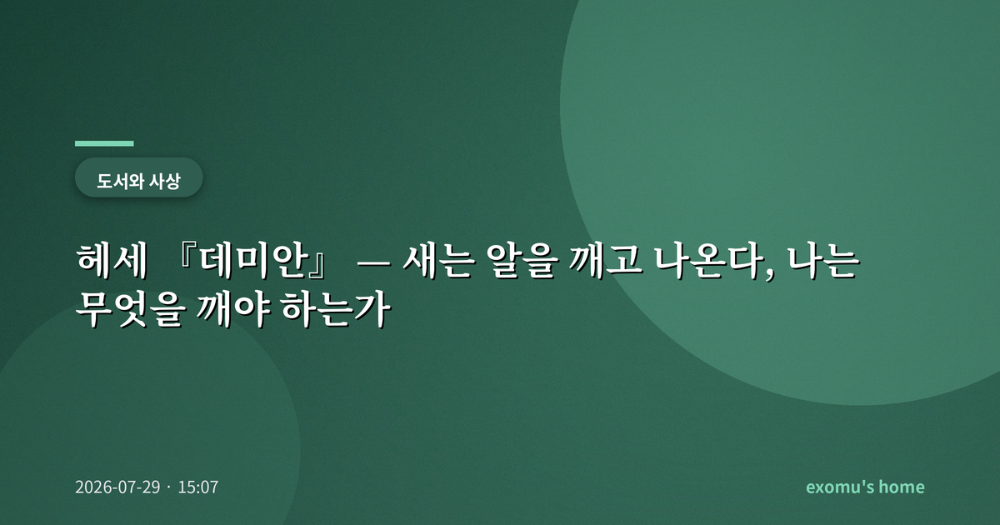
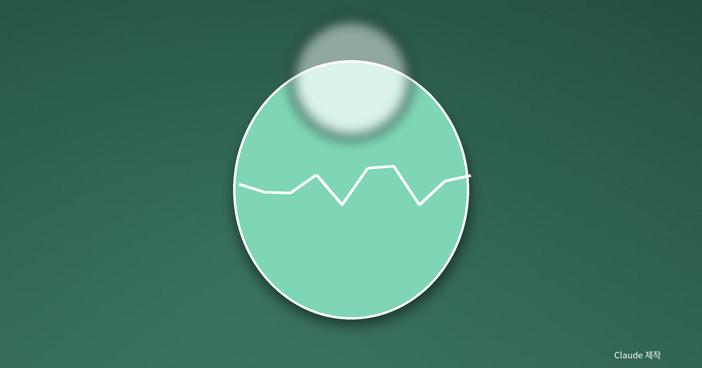
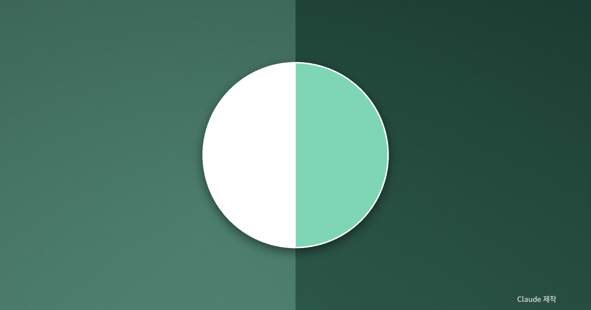
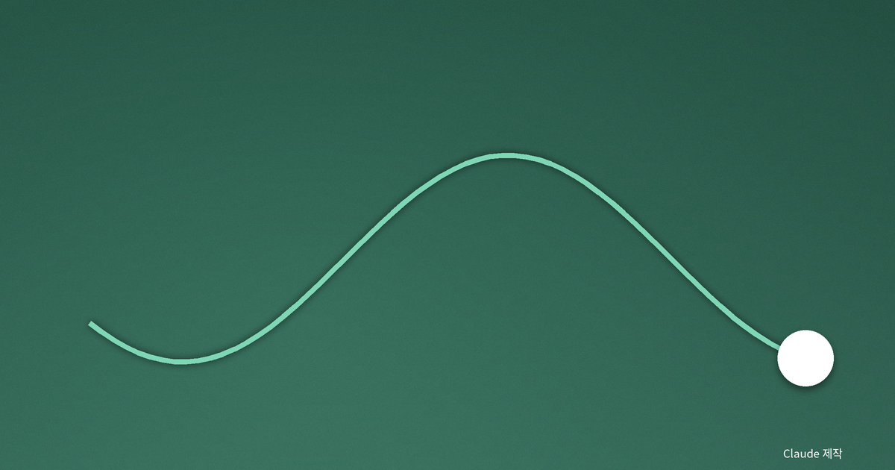
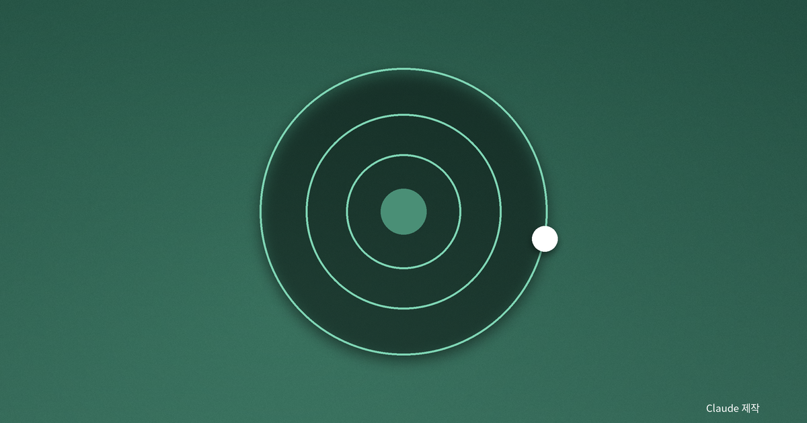

헤세 『데미안』 — 새는 알을 깨고 나온다, 나는 무엇을 깨야 하는가

밑줄 그은 한 문장
고등학생 때 나는 『데미안』을 읽고 딱 한 문장에만 밑줄을 그었다. "새는 알을 깨고 나온다. 알은 세계다. 태어나려는 자는 하나의 세계를 깨뜨려야 한다." 그때는 멋있어서 밑줄을 그었을 뿐이다. 무엇을 깨야 하는지는 몰랐다. 그로부터 오랜 시간이 지나 다시 이 문장 앞에 서니, 헤세가 말한 알이 실은 내가 편안하게 여겨 온 모든 것—부모의 기대, 남들의 시선, 익숙한 나 자신—이었음을 이제야 어렴풋이 안다.
나는 이 소설이 성장의 이야기가 아니라 '자기 자신이 되어 가는' 이야기라고 생각한다. 두 가지는 비슷해 보이지만 다르다. 성장은 남들이 정해 둔 계단을 오르는 일이고, 자기 자신이 되는 일은 그 계단이 정말 내 것인지 되묻는 일이다.

두 세계 사이의 아이
주인공 싱클레어는 두 세계 사이에서 흔들린다. 하나는 부모의 집처럼 밝고 따뜻하고 도덕적인 세계, 다른 하나는 거짓과 폭력과 욕망이 뒤섞인 어두운 세계다. 어린 싱클레어는 밝은 세계에 속하고 싶어 하지만, 자기 안에 이미 어두운 충동이 있다는 사실에 괴로워한다. 나는 이 대목이 이 책의 가장 정직한 부분이라고 느낀다.
우리는 오래도록 '좋은 나'와 '나쁜 나'를 나누고, 나쁜 쪽을 없애면 온전해진다고 배운다. 그러나 데미안이라는 신비로운 친구는 싱클레어에게 정반대를 속삭인다. 없애야 할 것이 아니라 끌어안아야 할 것이라고. 내 안의 어둠을 부정하는 한, 나는 반쪽짜리로 남는다.

아브락사스 — 선과 악을 함께 품은 신
소설의 한가운데에는 아브락사스라는 낯선 이름의 신이 놓여 있다. 이 신은 선과 악, 신적인 것과 악마적인 것을 동시에 품은 존재다. 헤세는 이 상징을 통해, 인간이 온전해지려면 밝음만이 아니라 자기 안의 어둠까지 통합해야 한다고 말한다. 나는 이것을 도덕의 포기가 아니라 도덕의 성숙으로 읽는다. 어둠을 모른 채로 지키는 선함은 시험받지 않은 선함일 뿐이다.
이 통합의 요구는 결코 편안하지 않다. 자기 안의 어둠을 들여다보는 일은 대개 부끄럽고 두렵기 때문이다. 그러나 헤세는 그 불편함을 피하지 말라고 말한다. 억눌린 것은 사라지지 않고, 다만 보이지 않는 곳에서 더 크게 자라기 때문이다. 진짜 성숙은 어둠이 없는 상태가 아니라, 어둠을 알고도 무너지지 않는 상태에 가깝다.
이 지점에서 소설은 시간과 정체성에 대한 물음으로 확장된다. 어제의 나와 오늘의 나는 같은 사람인가. 남이 만들어 준 '착한 나'는 정말 나인가, 아니면 내가 오래 연기해 온 배역인가. 자기 자신이 된다는 것은, 물려받은 배역을 벗고 아직 살아 보지 않은 나를 향해 걸어가는 일이다.

융이 말한 개성화
헤세의 이 소설은 심리학자 카를 융의 생각과 깊이 맞닿아 있다. 융은 사람이 성숙해 가는 과정을 '개성화'라고 불렀다. 그것은 사회가 씌워 준 가면과 억눌러 온 그림자, 그리고 진짜 자기를 하나로 통합해 온전한 자신에 이르는 긴 여정이다. 그림자를 외면하면 그것은 사라지지 않고 엉뚱한 곳에서 튀어나온다. 융의 언어로 옮기면, 데미안은 싱클레어의 바깥에 있는 인물이 아니라 그가 되어야 할 더 큰 자기의 목소리에 가깝다.

나는 무슨 알을 깨야 하는가
다시 그 문장으로 돌아온다. 알을 깨는 일은 한 번으로 끝나지 않는다. 우리는 평생 여러 개의 알을 깬다. 어떤 알은 부모의 기대이고, 어떤 알은 안정된 직장이며, 어떤 알은 스스로 만든 좁은 자기 이미지다. 깨고 나오는 순간은 언제나 두렵고 외롭다. 그러나 헤세가 알려 준 것은, 그 두려움이 곧 태어나고 있다는 증거라는 사실이다. 나는 오늘 내가 편안하게 머무는 세계가 혹시 깨야 할 알은 아닌지, 조용히 나에게 묻는다. 그리고 그렇게 물을 수 있다는 것만으로도, 어쩌면 알에는 이미 작은 금이 가기 시작한 것인지도 모른다.